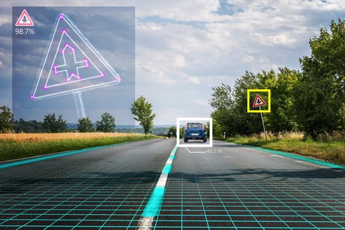
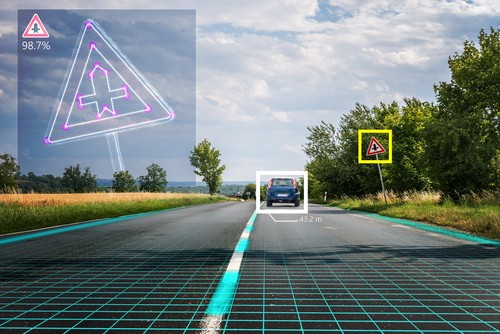
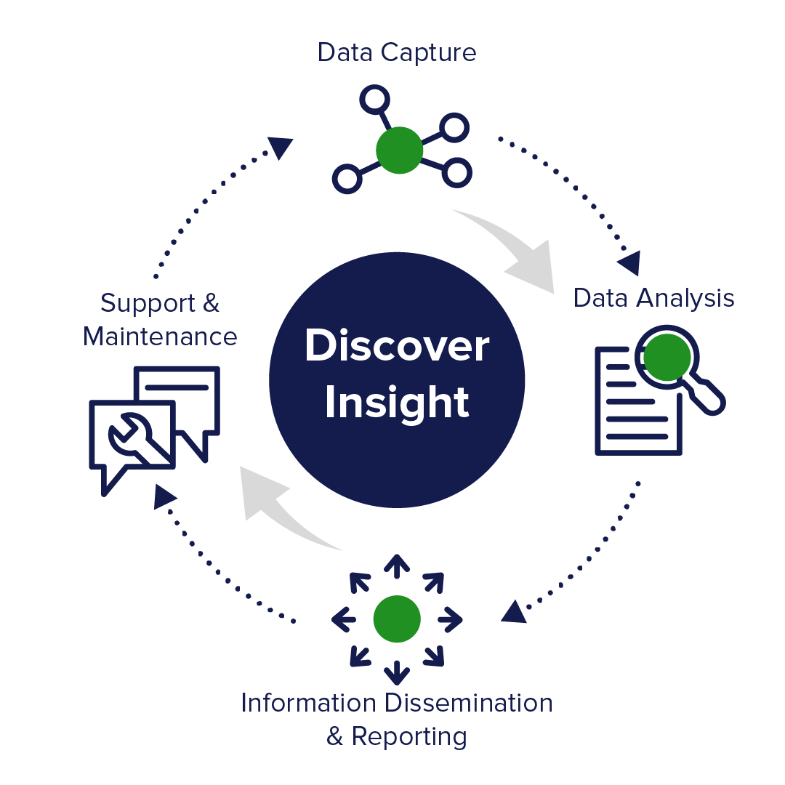

Embarking on a journey as a
dedicated developer,
my path is driven by a profound passion for Technology.
Along this journey, I've cultivated a commitment to excellence, honed creative problem-solving skills,
and developed impeccable organizational abilities. My expertise spans the latest advancements in machine learning,
data-driven innovation, and effective multitasking, with a special affinity for LLMs, MLops, and DevOps. Carthage AI is the culmination of this journey,
where I'm dedicated to unlocking AI's full potential.
 

Whether you're looking to enhance image recognition, extract valuable information from unstructured text, streamline data processing with efficient pipelines, or deploy AI models for real-world impact, we've got you covered.

My services in fine-tuning Gen AI models and aligning them with Proximal Policy Optimization (PPO) and QLORA ensure that your AI systems operate at their desired performance. With meticulous attention to detail in the data and a commitment to precision, AI solutions reach new horizons of alignment.

As a multifaceted data scientist, I specialize in both data analysis and web development,
leveraging Azure, Docker, and AWS. I bring machine learning models to life through
user-friendly web applications, turning data into actionable insights that drive your business forward.

I specialize in data analytics, offering end-to-end solutions for informed decision-making. From data collection to modeling to deployment and MLops, I provide personalized
strategies to unlock your data's potential. Elevate your business with data-driven success.